Idade: 35 anos
Altura: 1,70m
Clubes: Barcelona, PSG
Seleção: Argentina 
• 805 GOLS
• 357 ASSISTÊNCIAS
• 7 BOLAS DE OURO
• 6 CHUTEIRAS DE OURO
• 2 WC GOLDEN BALL
• 1 PRÊMIO LAUREUS
• 1 COPA DO MUNDO
• 4 CHAMPIONS LEAGUE
• 11 TROFÉUS DE LIGA
• 7 COPAS DA LIGA
• 3 MUNDIAS DE CLUBE
• 1 OURO OLÍMPICO
• 1 COPA AMÉRICA
 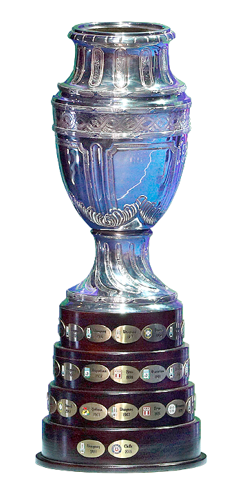
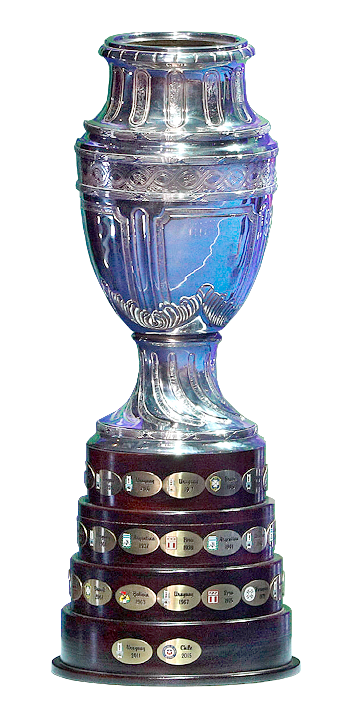
 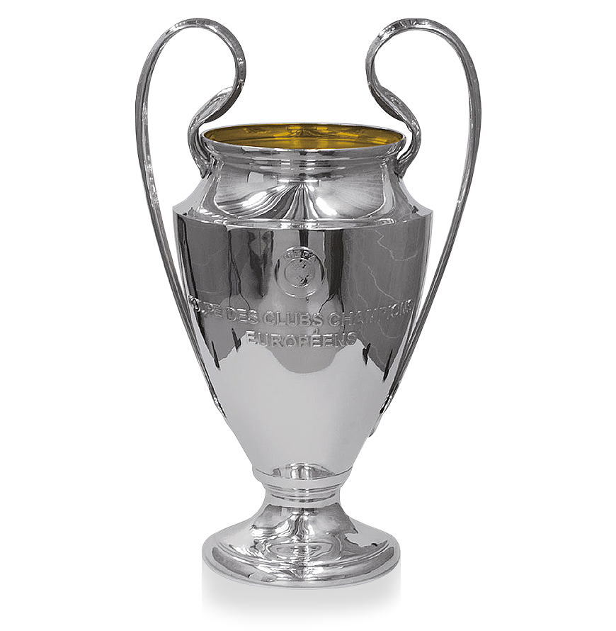
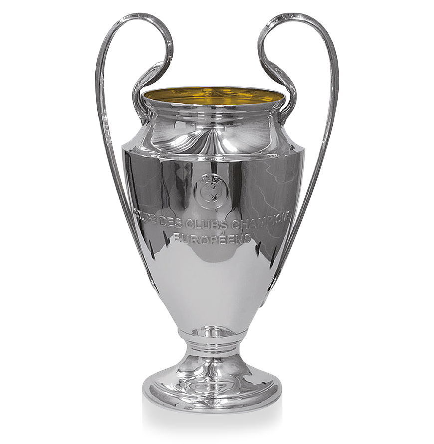


 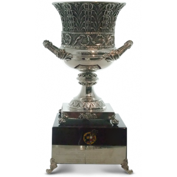
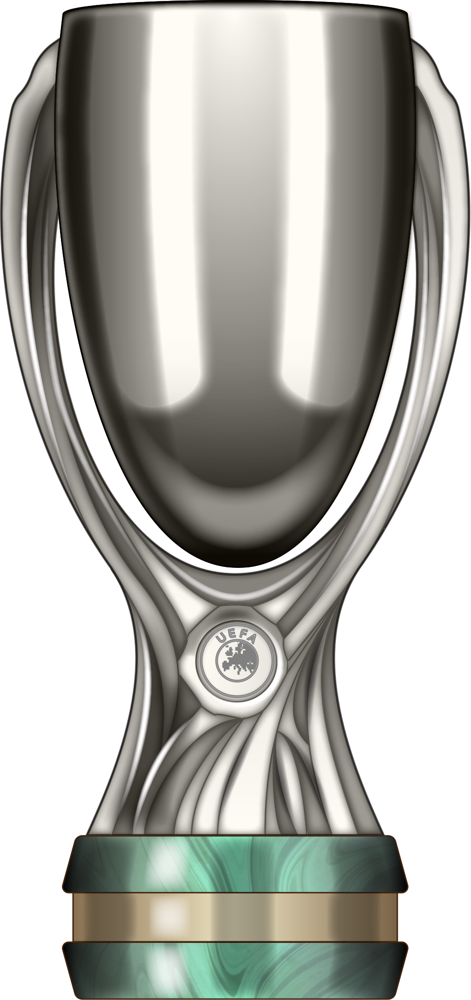
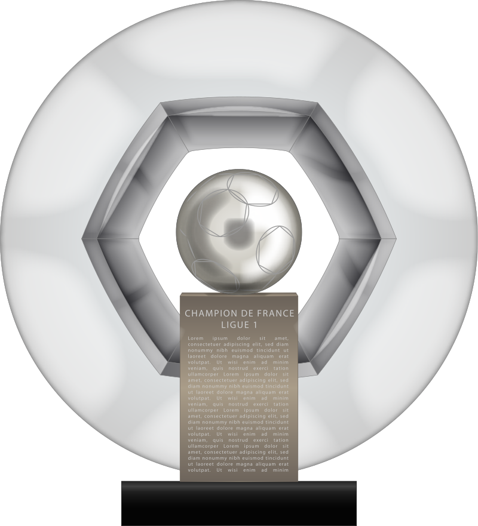
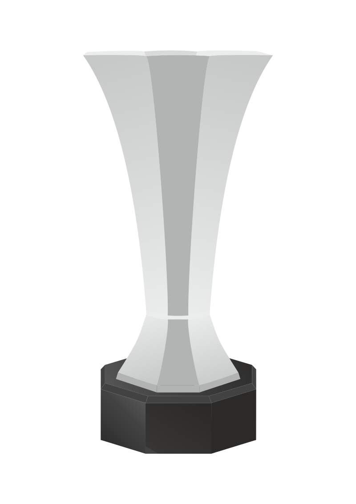
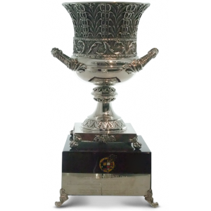
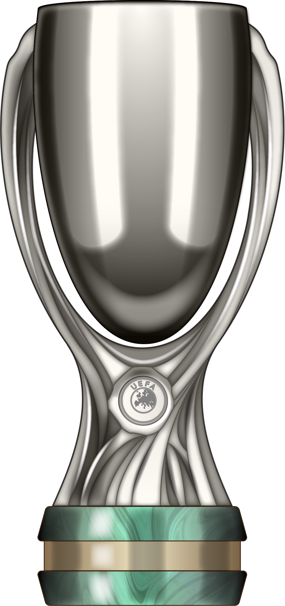
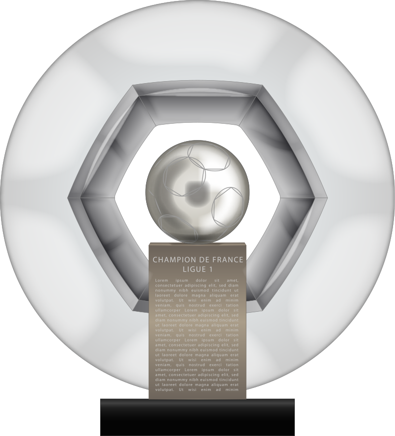
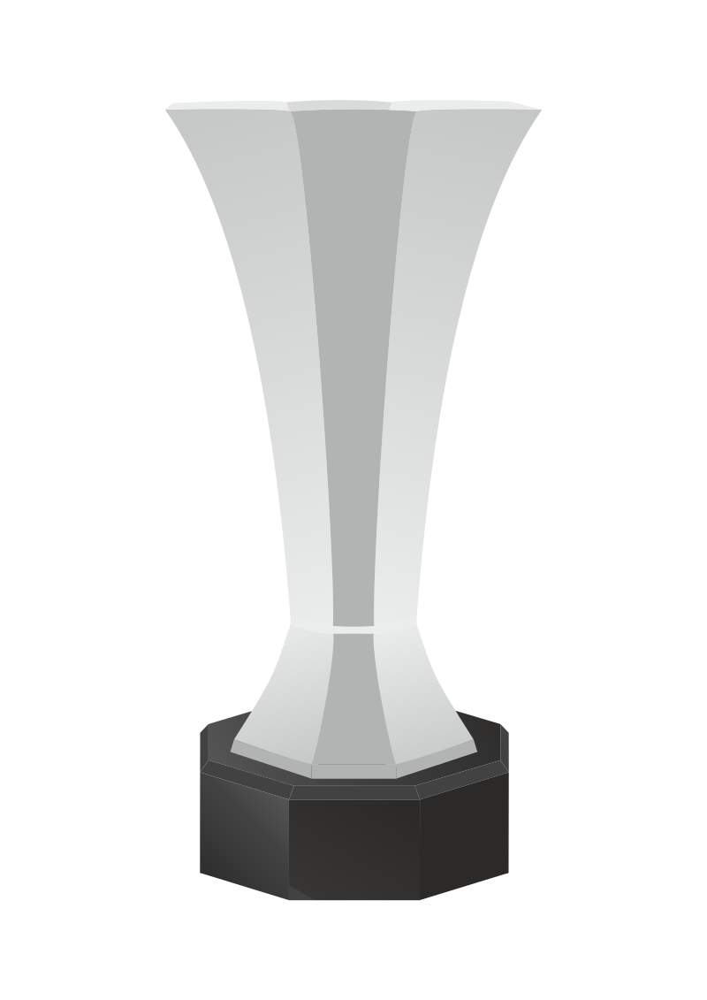

 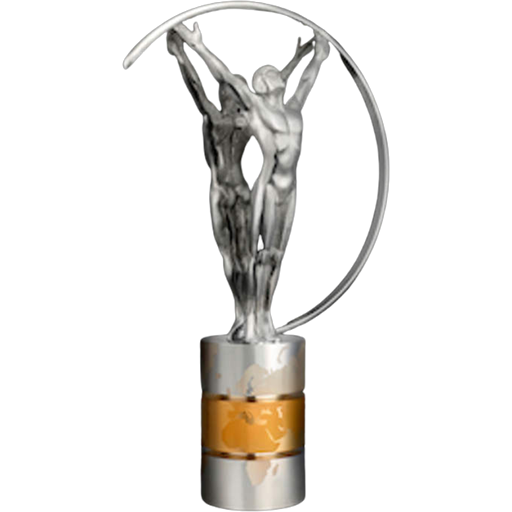
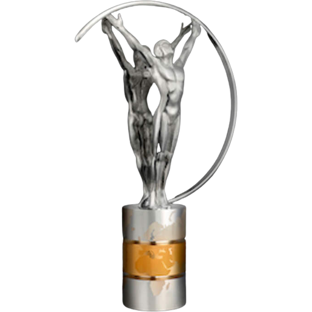